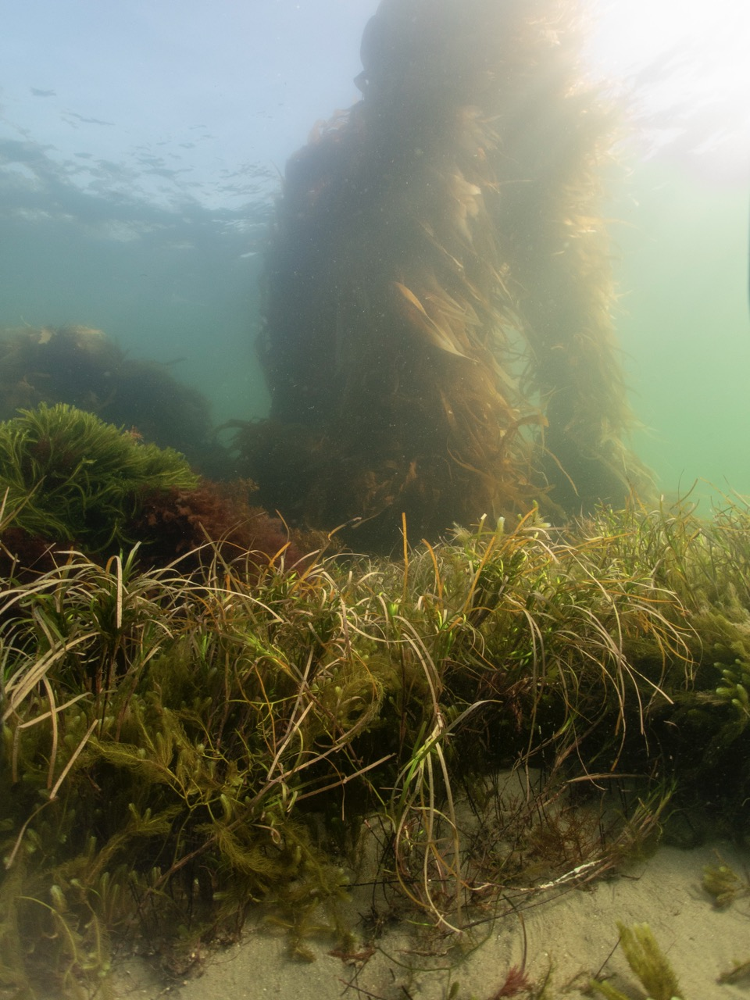
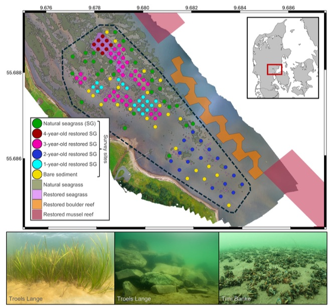

The sub-tidal (underwater) habitats of our coasts are rarely uniform. They are often mosiacs of many different types of habitats, and that’s the way animals like it.
For instance, the Great Barrier Reef is famous for being a living organism you can see from space. But there is a lot more to the reef than coral reefs. The reef ecosystem is an enormous mosaic of corals, sand, seagrass, sponges, mangroves and many other habitat habitats.
In fact, the area of seagrass meadows - which is just what it sounds like, underwater grass - in the Great Barrier Reef is greater than its area of coral reefs.
Many other coastal habitats are similarly patchy. Kelp forests are bordered by sand and seagrass, mangroves are interconnected with saltmarshes and coral reefs and seagrass is often patchy meadows interspersed by sand, rather than a continuous block.
Mosaics of habitats are like shops around a village town square. A village with just lolly shops would suit my children, but not many others. A village with cafes, flower shops, gift stores, stationary stores and others would draw in lots of different customers.
Similarly, diverse coastal habitat arrangements tend to support a greater diversity of animals than uniform blocks.
As animals move around these networks of habitats they also help make connections among them.

Image: Boundaries of different habitats, here a giant kelp grows next to a seagrass meadow near my home in Tasmania, are often popular with ocean animals. Photo by Chris Brown.
There are numerous examples. For example, one species of fish that rests on coral reefs during the day, swims to nearby areas to feed at night. In doing so, they transport nutrients (in the form of fish wee and poo) to areas nearby the reefs, benefiting other organisms.
Denmark’s coastal habitat mosaics
We are getting much better at successfully restoring some coastal habitats and seeing some great wins for ocean animals. But for this to really work for animals we need to restore mosaics of habitats, not just one habitat at time.
That’s why what they’ve done with habitat restoration in Denmark is really unique.
In Vejle Fjord government and scientists have been working together to restore seagrass, boulder reefs and mussel beds since 2019. Historically these habitats were abundant. But agricultural run-off and extraction of boulders has converted the system to one dominated by muddy sand (soft sediments).
To date, the restoration of the three habitats is extensive, about 22 football (soccer) fields worth of habitat.
This is a large area compared to your typical coastal restoration project. But, what is unique here is the restoration of multiple habitats in the same area.

Image Map of the restoration site showing the different habitats that have been restored from Sievers et al. 2025.
Studying the how restoration of seascapes benefits animals
The mosiac of restoration sites created the opportunity to study how animals would respond to the new seascape.
My colleague, Michael Sievers, worked with the Danish restoration science tea to count fish, prawns and sea snails in the seagrass and nearby bare sediment. Their surveys of animals included areas of remaining natural seagrass, as well as seagrass that had been planted in the restoration efforts.
When Michael invited me to help with the data analysis I jumped at the chance. I specialize in statistics and data analysis, and the way the surveys were done here meant there was potential to ask some really interesting questions about restoration ecology.
Michael wanted to know how if the animals did better when seagrass restoration was near to the mussel and boulder reefs that had also been restored.
The surveys were done in restored seagrass at different distances from the boulder and mussel reefs. This meant we could use the statistics to see if seagrass restored close to boulder or mussel reefs was better for the animals that might move among those habitats.
So I built a models of how animal numbers in a single location changed with the amount of seagrass and the distance to the other habitats. The model is a mathematical equation that describes a relationship like ‘as seagrass area increase we see more baltic prawns’.
The equation is built using statistics and the data, so it represents the real trends in the data. That’s why the survey design with different distances to different habitats was key. The model only works if it can find trends in the data.
The seagrass meadows were also patchy, some were larger than others. So we could also use the data to ask if larger areas of seagrass were better for animals when compared to mosaics of seagrass and soft sediment.
We found seagrass specialist species, like periwinkles, preferred larger areas of seagrass close to mussel reefs. Other species, like juvenile flatfish, preferred soft sediment that was near to mussel reefs, so there were fewer of them at the seagrass restoration sites.
Finally, some species preferred mosaics. Pipefish, which are a like a long thin seahorse, preferred patchy mosiacs of seagrass and soft sediment.
‘What if’ we did restoration differently
The models let us ask ‘what if’ questions about different ways to arrange the restoration of coastal habitats.
We calculated how many animals there would be with different seagrass plantings. For instance, what if the seagrass was planted only near to boulder reefs? What if it was planted far away from boulder reefs? What if it was planted in a mosaic of patches?
We found the best arrangements were different for each type of animal. The seagrass specialists liked a lot of seagrass planted in patches with small areas of soft sediment between it, like a checkerboard.
The species caught by fisheries (brown shrimp and flatfish) did best with large patches of seagrass and large patches of soft sediment.
Our study shows there are benefits to restoring whole seascapes of habitats together. Going forward I hope it can provide a pathway and motivation for other places to tackle the challenge of restoring seascapes.
Further reading
Michael’s study on animals at the Denmark restoration site https://doi.org/10.1002/eap.70163
Great Barrier Reef habitats https://www2.gbrmpa.gov.au/learn/fascinating-facts-about-great-barrier-reef
Seagrass on the reef https://www.sciencedirect.com/science/article/abs/pii/S0272771414002078
Linkages among coastal habitats https://www.nature.com/articles/s44183-024-00095-1
Example of connections: Benefits of fish poo for nearby ecosystems https://esajournals.onlinelibrary.wiley.com/doi/full/10.1002/ecs2.2225